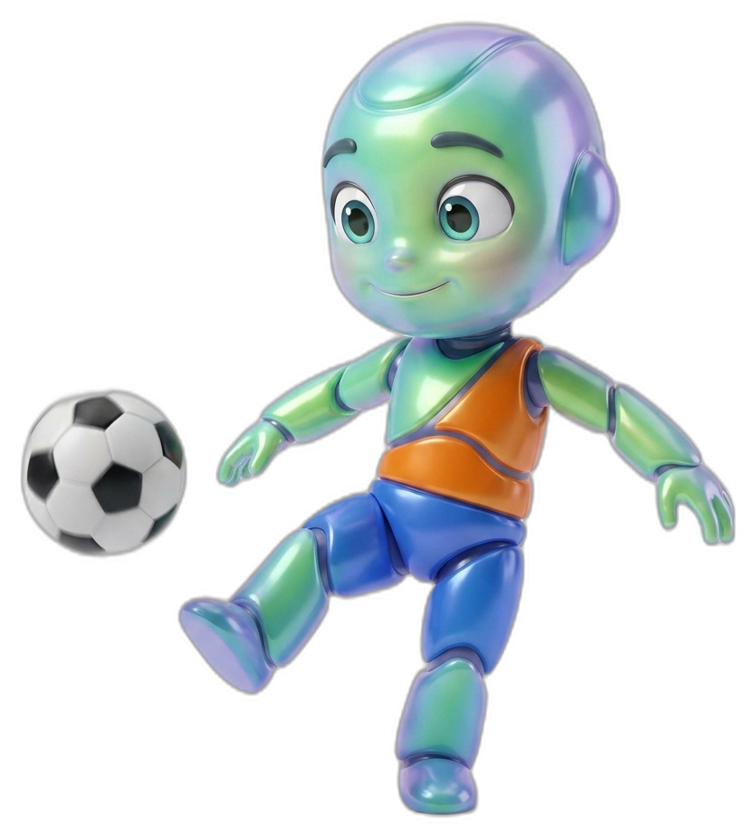
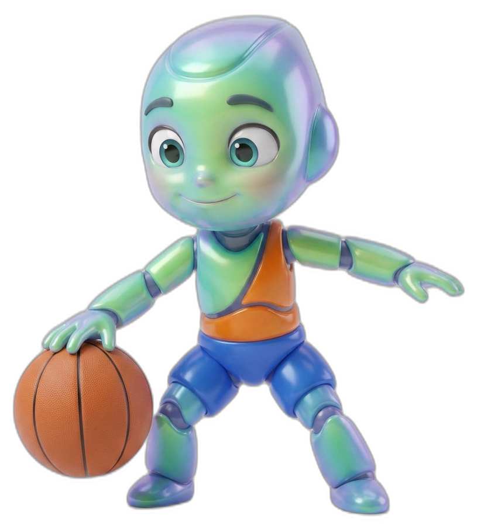
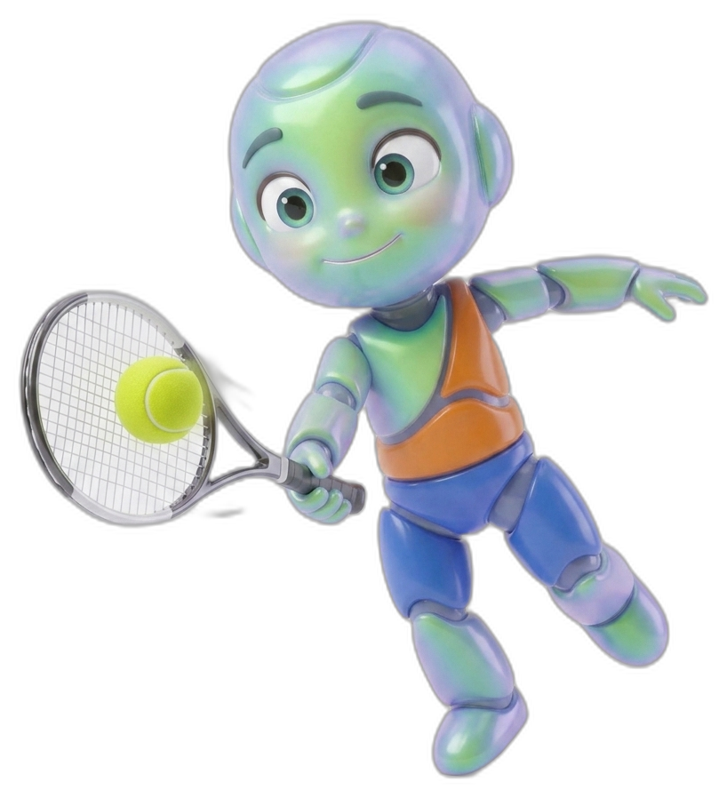
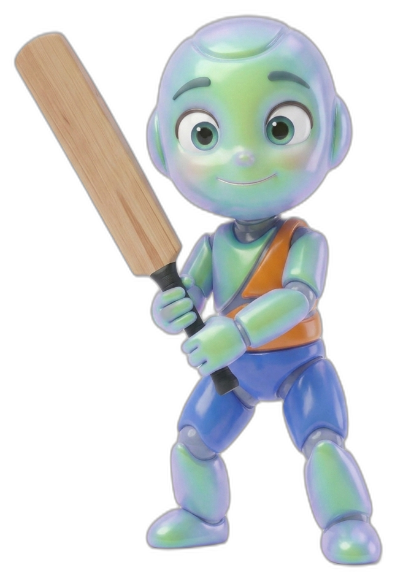
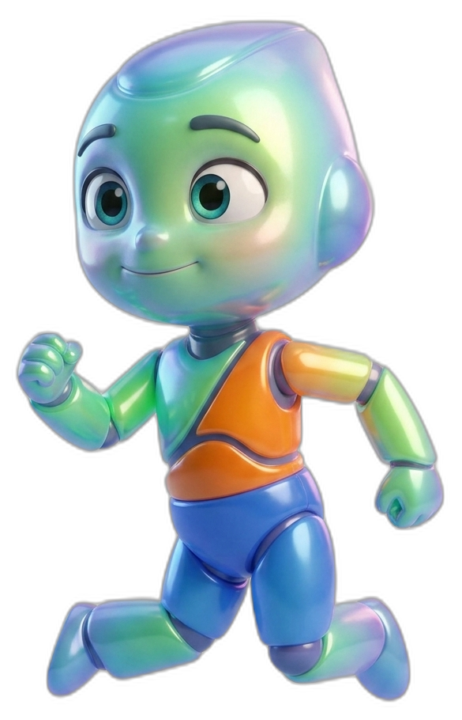

Fundamentals
Multi-sport development that builds core athletic skills before children specialise. Six sports, one foundation — speed, agility, coordination and teamwork, taught through play rather than drills.

What children develop
Six sports, one programme




Frequently asked questions
What age group is Fundamentals for?
Fundamentals is designed for children aged 5 to 8. Younger children (2–4) should start with Little Movers; children 9 and up typically progress to Performance Pathway.
Does my child need experience in any of these sports?
No. Fundamentals is designed as a first structured introduction to multi-sport movement — no prior experience is required.
How does a child progress from Fundamentals?
Children earn competency-based Achievement Badges (Explorer, Focus, Agility, Teamwork, Resilience, Champion) while in Fundamentals, and graduate to Performance Pathway based on age and developmental readiness — not on badge count alone.
Other pathways
Ready to start Fundamentals?
Find a session near you and enrol today.